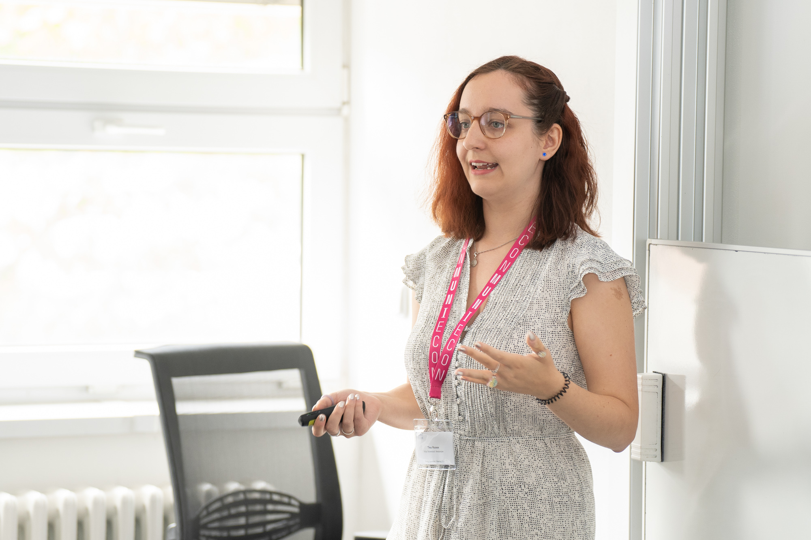
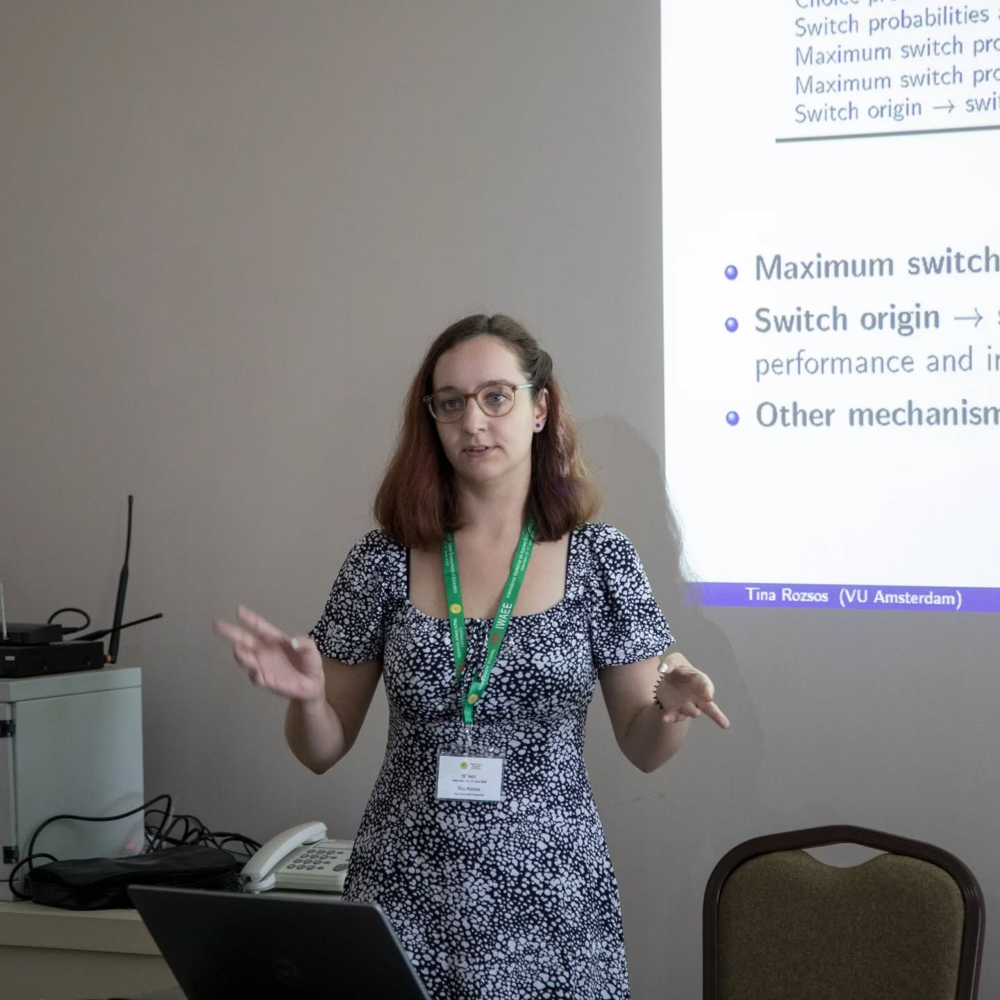

My first PhD year: a recap
Now that the second year of my PhD is well on its way, I’m ready to take some time to reflect on what I did during the first year and what my plans forward are.
A bit of background first (if you found this post without knowing me – not sure how that would happen, but if so, hi, welcome, I’m Tina!): I’m a PhD student in economics at the Vrije Universiteit Amsterdam. My research focus is on the economics of education, with a particular interest in higher education, especially the liberal arts and sciences (LAS) model. I started my PhD in September 2024, but I had a bit of a head-start: having a Research Master degree from Tinbergen Institute exempted me from all regular PhD coursework (after all, the TI courses are the courses PhD students normally take for their research qualification), and my MPhil thesis on school choice and school switching in Amsterdam secondary schools formed the basis of the first chapter of my PhD dissertation.
So September 2024, I show up to my first day at work at 9am – wasn’t sure what to expect, but an empty office that I can’t even get into was not it. Turns out, people do not show up at 9am on the first day of the academic year, or on any other day really. But I wasn’t the only new PhD student, and gradually we all got our access keys, got to know the rest of the department, and settled in. I arrived with half a paper and an extensive list of feedback from my supervisors: things that would have taken too long to change before defending the MPhil thesis but still important to get to before the paper is publishable. I’d love to say that as a result, I sat down right away and got to work, but that’s not what happened.
I submitted my MPhil thesis in August, and took a bit of a last-minute vacation (destinations chosen based on the availability of cheap and reasonably short train rides). However, this break wasn’t quite enough to fully recharge and be ready to dive right back into the project that has been taking up most of my time for over half a year. I did feel the urge to be productive, but my willingness to be productive extended to anything other than my first paper.
Fortunately, I found other ways to keep myself busy. I joined the virtual version of posit::conf(2024) back in August, and I got very excited about all the new R and Quarto functionalities I learned about there. Especially relevant was Cynthia Huang’s talk about knowledge management in Quarto (GitHub repo). It seemed like the perfect solution to the problem that I was just in the process of realizing I had.
A PhD takes 4 years. That means that 4 years from now I still have to be able to find and make sense of work I do in my first year. And from previous experience I know just how much my level of expertise and therefore workflows can change over 4 years. Now I can either deal with this problem now or in 4 years. Most people would probably choose the latter, but I needed a good procrastination project. So I spent the first days(weeks) of my PhD setting up a personal knowledge management system in Quarto. It’s basically an unpublished website where I can collect any PhD-related information:
- a calendar with important deadlines (made with
ggplot2because I love to abuse that package for anything and everything) - one page per research project, summarizing key information, feedback I received (separated into resolved, unresolved, and ignored so that no info is lost), next steps, etc.
- categorized meeting notes with agendas and to-dos
- searchable notes about papers I read
- conference dates, application deadlines, links to calls
- keeping track of my research funding (it’s running out fast whoops)
- quick notes on future research ideas and personal development plans (at least vaguely) related to my PhD (e.g. learning Dutch)
- miscalleneous useful bits, e.g. variations of my short bio whenever I need to send one somewhere
Of course, this system is inherently for internal-use: it’s messy and personal. But maybe in the future I’ll turn it into a template repo that others can use to set up their own knowledge management system; I guess I made enough changes compared to Cynthia’s version that it could be useful for others to see mine as well.
With this productive procrastination and some immediate teaching duties, it took me until October to seriously get back to writing my first paper. At this point, I sort of forced myself into making progres by signing up to present my work-in-progress at our departmental seminar. This was a great decision: it gave me a clear deadline to work towards, and I got helpful feedback during and after the presentation. It also kickstarted the rest of my progress: by the time most conference deadlines rolled around in January, I had a very imperfect but complete draft of my first paper ready to submit to conferences.
Since I was very aware of the imperfections of my draft, I went a bit overboard with the applications under the assumption that I have no chance getting accepted to most conferences anyway. Plus I wasn’t quite sure which conferences are the nicest, which ones I should want to go to. So I figured that on the off-chance that I get into more than what I can affort to travel to, I’ll ask for advice from my supervisors and other PhDs at that point.1
I ended up submitting to 8 conferences, of which I got accepted to 2: the Young Economists’ Meeting (YEM) in Brno and the Fifteenth International Workshop on Applied Economics of Education (IWAEE) in Catanzaro. With some very complicated mental math, I figured out that the costs of these two conferences would add up to approximately a quarter of my 4-year research budget. While I have some concerns that I’ll want to travel more later on as I get nearer to the job market and networking becomes even more important, this time I decided that this is a future me problem, and went to both conferences. It turned out to be a great decision: these conferences, in this order, were a perfect fit for me.
YEM was quite small and very friendly. The fact that around me were mainly other early-careed researchers made it a lot less intimidating to present my work. I was probably the youngest presenter there, but I didn’t feel out of place at all, and everybody was really encouraging when they found out that this is my first econ conference. We’ve had insightful discussions, I got good feedback, and I learned about interesting research (all presentations were of a very high quality). During the conference dinner, I even accidentally ended up sitting in between the two keynote speakers, which scared me at first, but they were both super nice, and we’ve had great conversations. In addition, I could spend a bit of time exploring Brno and Vienna, including walking with a couple other attendees after we happened to take the same train to Vienna on our way home. And I got a cute picture of me presenting :)

IWAEE was bigger and more intimidating – or at least it would have been more intimidating if I didn’t have a team around me: 3 other PhDs from Amsterdam partially with the same set of supervisors, or at least the general academic family, all with significantly more conference experience than me. And an ex-PhD student with the exact same supervisor team as me, who left Amsterdam just before I started. This meant that I could always find people to talk to, and it made us more approachable too, as other people could join our ongoing conversations rather than having to start something from scratch. This social aspect was especially nice given all the time we spent eating absolutely amazing Italian food (there was so much food, I never stopped being full). Once again, I was amazed by the quality of the presentations and very satisfied with the feedback I got on my work. I guess organizing a conference on an Italian beach has the advantage of attracting a lot of great researchers who want to intersperse academics with morning swims and 5-course dinners. I’d certainly be happy to go back to Catanzaro.

But then conference season was over, and I was left with a mostly-empty office and a long to-do list. The first paper was slowly coming together. And in the meantime, I also came up with a second paper idea that I liked enough to pursue, so I started to (slowly) get that one going as well.
I ended up spending much of summer on the second project, since that one still had all the new-project-excitement: I got my coauthor on board, and we wrote the proposal that we’d needed to get access to admin data, and submitted an ethics committee application. We got data from my former college, which meant that I could pursue a project about LAS education, the topic closest to my heart. And when I got the data, the most fun part of any project started: playing with the data and finding all kinds of interesting things in there. Of course, me being a perfectionist, I quickly decided that I need some more information, so in addition to the already rather clean admin data, I spent quite some time accessing, importing, and cleaning raw text data from old course outlines and other archives until I had a comprehensive database of the details of all courses ever offered. And that’s how I spent my summer and I have no regrets (a vacation was not really an option because I moved house in August so I had to deal with that instead).
And now it’s October of year 2, and things are looking good. With some further work on the first paper, and discussions with and edits from my supervisors, it’s almost ready to be out as a working paper. and then submitted to journals. The second paper is still in the early stages, but from now on, that will be my main focus, so I hope that this will change soon. I am once again going for the strategy of forcing myself to progress by signing up to present at our departmental seminar in December (it worked once, might as well keep it up). And maybe you’ll see the new paper at a conference next summer.
In summary, I’m quite happy with how my first year went. I got two papers well underway, I attended two conferences, and I have a system that will hopefully make my life easier in the coming years. Plus I took two Dutch courses, started to work on my Basic Teaching Qualification, TA’d multiple courses, and supervised my first Bachelor’s thesis. And I’m genuinely enjoying my experience so far, with excitement for the next three years.
Footnotes
It’s worth noting that “asking other PhDs” was already my most successful method of finding out what conferences even exist. I didn’t want to also immediately ask for subjective evaluations of quality in addition to the links to the calls, fearing I’d look too clingy (my fellow PhDs are very nice and helpful, I shouldn’t worry like this).↩︎